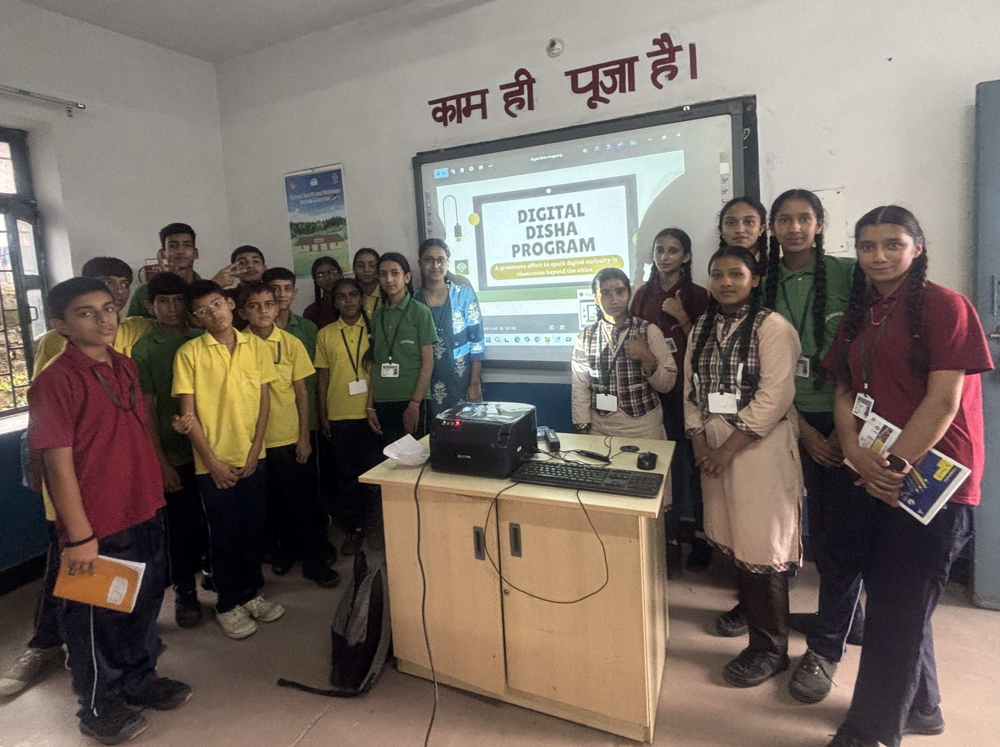

Completed
Cohort 1: Government High School, Kotli
Digital Disha's first on-site cohort was launched at Government High School, Kotli, in Mandi district, Himachal Pradesh. The program introduced students to practical computer skills, creative tools, internet basics, and web development.